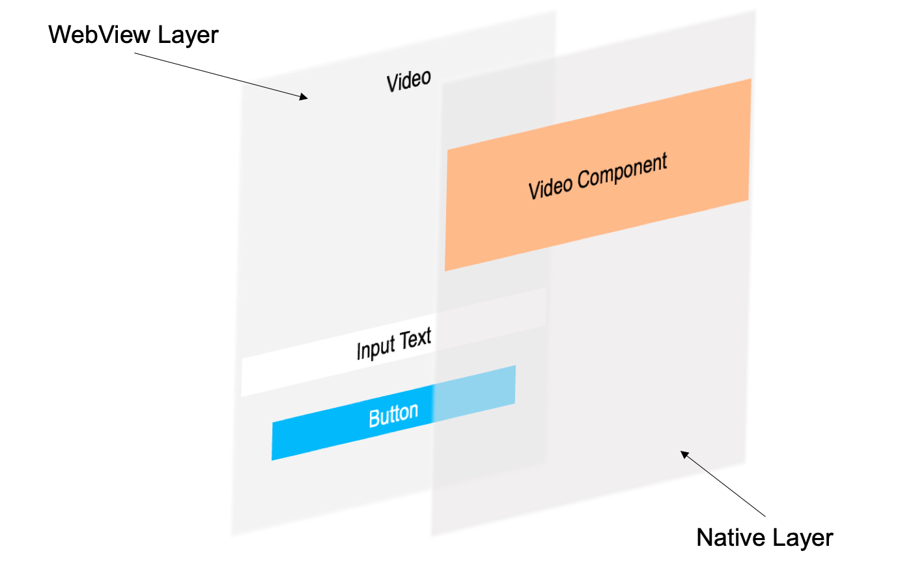
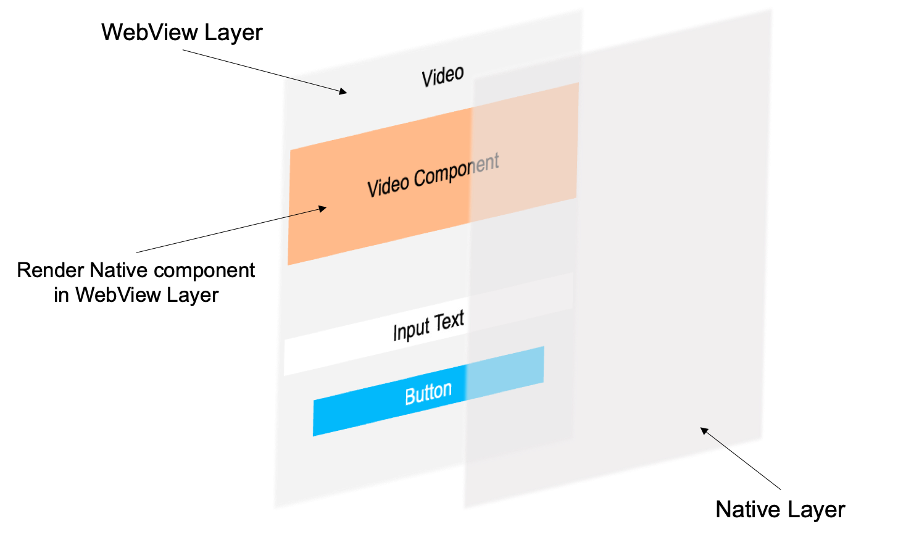

This document aims to identify representative use cases of where WebViews are being used, regardless of the platform and type of device they're used on, identify the issues that arise from these usages and determine whether these issues can be addressed through improvements to the Web Platform, the surrounding ecosystem (e.g. documentation, testing frameworks) or through other mechanisms.
This is the skeleton of the core document on which the WebView Community Group will focus in its first phase of work.
Introduction
The WebView Community Group aims to identify, understand and reduce the issues arising from the use of software components (typically referred as WebViews) that are used to render Web technology-based content outside of a Web browser (Native Apps, MiniApps, etc).
This document contains sections describing the use cases that were contributed by multiple authors. Since this document is a group note, additional use cases will be added in future revisions of this document.
Types of WebViews
WebViews can differ based on the following properties
UX flexibility: Whether the web content can be embedded within the native application
Access to web content: Whether the native application has the ability to read or modify the web content
State sharing: Whether the WebView shares state with the browser or is completely isolated
However, in practice, WebViews are classified into one of two categories with fixed properties
browser-like WebViews
These are more straightforward WebViews with a simpler API surface mostly related to loading the web page. They generally span the entire application, do not provide access to the web content, and share state with the browser.
fully-fledged WebViews
These WebViews are used for creating richer experiences by utilizing powerful integration features. They have full UX flexibility when integrated within an application, provide the ability to access the web content (communication between the native and web), and are completely isolated from the system browsers.
Implementations
The following table contains different WebView implementations with their different considerations
WebView Type
Name
Platforms
Description
Features
Limitations
UX flexibility
Usage Example
Full-fledged WebViews
Android Webview
Android
Default WebView implementation on Android
Rich API with JS and CSS interaction. Tie WebView and native APIs together
Features equal to current Chrome but some Web APIs are not supported
Allows you to mix native content with the WebView and to resize it
Hybrid Frameworks (Cordova, Capacitor)
WebViews for a browser-like experience in apps
Custom Tabs
Android
API for opening browser-like WebViews on Android
Browser navigation and conveniance features like password fill
App has no access to Web content
Covers the entire application with some minimal top bar customization
Link preview in social media Apps
WebViews for a browser-like experience in apps
SFSafariViewController
iOS, iPadOS
API for opening browser-like WebViews on iOS
Browser navigation and convenience features like password fill
App has no access to Web content
Covers the entire application with some minimal top bar customization
Link preview in social media apps
UIWebView (deprecated)
iOS, iPadOS, macOS
Soon-to-be-removed WebView API of iOS
Rich API with JS and CSS interaction. Tie WebView and native APIs together
Some current Web standards not implemented. Performance and security wise inferior to WKWebView, deprecated
Allows you to mix native content with the WebView and to resize it
Hybrid Frameworks (Cordova, Capacitor)
Full-fledged WebViews
WKWebView
iOS, iPadOS, macOS
Default WebView implementation on iOS
Rich API with JS and CSS interaction. Tie WebView and native APIs together
Features similar to current Safari but some Web APIs are not supported
Allows you to mix native content with the WebView and to resize it
Hybrid Frameworks (Cordova, Capacitor)
Full-fledged WebViews
WebView2
Windows
Default WebView implementation on Windows
Rich API with JS and CSS interaction
Usages
Hybrid apps
Hybrid apps combine elements of native applications and the web.
Web apps are an example of this, where the content is displayed using web technologies. This provides developers a cross-platform way of building an application. For native capabilities that are not available in the Web Platform, fully-fledged WebViews can be used to achieve parity via a native/web communication channel (web content access).
Another example is in-app browsers (IABs), which is a pattern of handling web page links within the application.
Browsers
WebViews can enable building browsers more easily, since they provide the capabilties of a rendering engine. With fully-fledged WebViews, the browsers can provide more customizable experiences (e.g. privacy-focused browsers) by modifying the web content.
Mini apps & super apps
WebViews enable the rendering of the web content the constitiute a MiniApp page.
For some Web components that are not supported by the WebView or have performance limitations (such as map, video, etc.), native components are used and are rendered by native view.
For these reasons, fully-fledged WebViews are used in the MiniApp ecosystem, to allow for UX flexibility and communication between the native side & the web content.
Limitations & Challenges
Individual limitations and challenges can be found in . The following themes have emerged
Performance
Responsiveness is a critical requirement for applications. There are multiple opportunities to improve WebView performance, such as for intialization and page loads.
Inconsistencies
Behavioural inconsistencies across different WebViews diminish the interoperability of the web, since web experiences will have to be special-cased against the WebView.
Control
Especially for fully-fledged WebViews, some user journeys are unachievable without additional control over the web content and rendering engine.
Security and Privacy
fully-fledged WebViews provide some powerful APIs that allow native apps access to the web content, unrestricted by web security boundaries. This unlocks powerful integration features, however it can also be used for malicious purposes such as tracking and phishing.
Scenarios
Load a WebView Page
Submitter(s)
Qing An, Alibaba
Motivation
It is quite common to use WebView in Native App development, due to WebView’s benefit of cross-platform interoperability. But the page loading performance of WebView cannot satisfy Native App well, which means the loading of a WebView page is quite slower than loading a Native page.
The below is WebView page loading, it firstly shows the white screen.
WebView page loading
But for the Native page loading as shown below, it shows the skeleton immediately, which gives a better user experience compared with WebView.
Native page loading
Therefore, how to enhance the loading performance of WebView page needs to be addressed.
Stakeholders
WebView provider: browsers, deciders on how to enhance WebView
WebView user: Native App or MiniApp which rely on WebView to render pages
End user: users of the Native App or MiniApp are indirectly using the pages and functions implemented by WebView
Analysis
The reason of long white screen is due to serial execution in loading a WebView page. The duration of white screen directly depends on the time cost from routing intercept to JS download & parse & exec as described in the following figure.
Procedure of loading a WebView page
Preload defines provides a declarative fetch primitive that initiates an early fetch and separates fetching from resource execution
How is the issue solved in the Browser, and what’s more is needed?
In the Browser: Prefetch, Preload and Next are used to pre-request resources (e.g. HTML, CSS, JavaScript, Img, etc.), but they are not supported or only partly supported by WebView.
What’s more: how to pre-request the data (JSON, XML, etc.)
Take e-commerce App as example. WebView is used to render the page of product list and product info. So, a request to fetch the data is needed, and the data is described and transferred in the format of JSON or XML. Sometimes, user info is also carried in the request, to obtain the personalized product info. If the data can be pre-requested, the performance of loading a product page can be increased.
Requests/responses sharing and proxy between Native and WebView
Submitter(s)
John Riviello
Jiasheng Wu, ByteDance
Motivation
In a hybrid Native/WebView app, some Native app may load first-party website or third-party website through WebView. So, the Native app and the WebView may make the exact same calls in first-party business, or Native app handles the resource request on behalf of WebView and the corresponding response data returned to WebView can even be different with what is received by Native from the backend server. Also, not all requests want to be proxied through Native, WebView user want to proxy a small number of requests locally to load offline resources.
Some scenarios:
Document access control: it is expected to manage the access control of Web access documents, allowing different users to access documents of different levels.
Security firewall: In order to meet compliance requirements, network engineers want to audit requests within the app, and do not allow insecure requests to be sent on the web.
Transcoder: In special scenarios, we may need to convert GIF images to JPEG images to send to reduce traffic, and may also need to translate documents to meet communication needs in different language scenarios. For example, it's hard for a user to communicating in English. When communicating, the user can type Chinese and it will be automatically translated into English.
Anonymous: Some users may have higher requirements for the privacy of Web access, requiring that requests within the Web must remove identity features (such as client IP address, From header, Referer header, cookie, URI session ID), providing a high degree of privacy and anonymity.
Reducing network requests: A hybrid app (in the sense that some screens are native code and other screens are Webviews) may make some of the same network requests (HTTP GET, POST, PUT, DELETE, or other network connections supported by webviews such as Web Sockets and WebRTC) in both the native screens and the webview screens. Being able to easily share those responses between native and web (while maintaining proper HTTP cache semantics) would reduce redundant requests, saving end-users bandwidth and reducing server traffic.
Stakeholders
WebView provider: Apple, Google, deciders on how to enhance sharing between WebView & Native
WebView user: Native Business rely on WebView to send internal request, or load offline resource
End user: users of the App save bandwidth by not having to make duplicate calls
Analysis
This is currently even possible in some way, but it is not a recommended pattern. So making this a standard that is easy to use for both Native and WebView developers would be a win for both groups.
shouldInterceptRequest in Android WebView provide develop with optional network interception capability.
Related W3C deliverables and/or work items
N/A
How is the issue solved in the Browser, and what’s more is needed?
N/A
Render WebView Components and Native Components in same layer
Submitter(s)
Qing An, Alibaba
Motivation
Hybrid Native/Webview App and MiniApp often use both WebView Components (text, label, button, image, etc.) and Native Components (such as video).
Add a map: due to that developing a Web-based map component is difficult and not so good performance, developers may choose to use the Native map component. Usually, developers cover the WebView with the Native map component. But very often, the Native map will cover all the Web components rendered by WebView. And it is difficult to display one or several Web components on the Native map.
Integrate a third-party content into WebView: from the business perspective, Native App needs to integrate third-party advertisements into the some App UI pages which are rendered by WebView. Many third-party advertisements are implemented based on Native components. How to integrate Native components with WebView smoothly?
WebView interacts with Native component: developers have implemented a fancy UI page based on WebView, and then the WebView needs to use an extra Native component. How can the Native component interact with WebView smoothly? Like how to let Native component reuse the event handling and message interaction that have been implemented in WebView?
Unlike WebView Components, the Native Components are rendered by Native App instead of WebView. While Native Components can bring more features by complementing WebView Components, Native Components also bring issue for developers due to that Native rendering is independent of WebView rendering.
Therefore, Native Component cannot be controlled by z-index property, and cannot overlap with WebView components, as illustrated below.

Render WebView Components and Native Components in separate layers
But if the Native Components can be rendered in the same layer of WebView Component, AKA in the WebView Layer, developers can easily control the Native Components as well as the overlapping with other WebView Components, as illustrated below.

Render WebView Components and Native Components in same layer
Stakeholders
WebView provider: Apple, Google, deciders on how to support the same layer rendering
Native App or MiniApp developer: rely on the WebView
End user: users of the Native App or MiniApp are indirectly using the pages and functions implemented by WebView.
Analysis
Currently, Native rendering is independent of WebView rendering. Therefore, Native Component cannot be controlled by `z-index` property, and cannot overlap with WebView components.
Related W3C deliverables and/or work items
N/A
How is the issue solved in the Browser, and what’s more is needed?
N/A
Inject custom JS scripts
Submitter(s)
Maxim Tsoy, Duck Duck Go
Motivation
User scripts (aka content scripts) is a powerful tool that unlocks many possibilities such as:
security and privacy protection (e.g. blocking harmful APIs, preventing data leakage and fingerprinting)
enriching web app functionality (e.g. filling previously saved passwords, translating text to foreign language, polyfilling missing APIs)
Injected scripts can also be a workaround when another WebView feature is not available: for example, due to the lack of granular cookie control in native WebView APIs, one method is to inject a script to augment `document.cookie API`.
Stakeholders
WebView vendors: Google (WebView), Microsoft (WebView2), Apple (WKWebView)
App developers that need customizations of the rendered content
Analysis
Web extensions have a similar concept of content scripts, however the features provided by the native WebView implementaions are much less versatile and not standardized.
Most platforms implement a basic `evaluateJS()` kind of method, which allows to execute arbitrary JS code in the page context. However, it is limited, and lacks some important features that would make developers live easier if they were cross-platform:
Run scripts in isolated world
It is common for web pages to change JS prototypes and global variables. This can easily affect the scripts injected by the native app. This can lead to security and privacy issues, and is very hard to prevent. Isolated world prevents these collisions by running the content script within its own JS environment, while still allowing it to access the DOM. Moreover, scripts in isolated world are not affected by CSP and other restrictions imposed on the page scripts.
Inject scripts in all iframes, including cross-origin and sandboxed ones
This is currently a serious limitation on Android, which only allows executing in same-origin contexts. For DuckDuckGo browsers, this makes it very difficult to apply tracking protections, since trackers often operate in a third-party context.
Inject scripts before all page scripts
Web extensions have a "run_at" paramenter that controls when the script will be executed. This is crucial for any security and privacy customizations that need to apply protections before any malicious script can take effect. For example, anti-fingerprinting protection augments the APIs, but it only protects from scripts executed after it.
WKWebView and WebView2 can do this (although API approaches are different), but Android WebView doesn't allow it
Secure messaging between the native code and injected scripts
Content scripts often work in combination with the native components and so require communication. For example, in DuckDuckGo browsers scripts use this to read user configuration (which is managed by the Native App), and trigger native UI changes on page-generated events.
WKWebView provides a convenient API for passing async messages, but Android WebView and Windows WebView2 do not have an alternative. It is possible to achieve a one-way communication by exposing global JS callables, but without isolated world this is insecure, since page scripts would be able to use those globals too.
Inject scripts in ServiceWorkers and (Shared) Web Workers
Some scripts are designed to change the JS environment of the page scripts. For example, DuckDuckGo cookie protection deliberately changes the `document.cookie` API to protect against long-lived tracking cookies. However, there is currently no (straightforward) way to do this in Workers, which have access to powerful APIs as well (e.g. Cookie Store API)
This is currently not possible on any platform
How is the issue solved in the Browser, and what’s more is needed?
In browsers, many of these issues are solved by Web Extension API. A lot of design patterns could be (and already are) borrowed from there. WKUserScript is clearly inspired by, and probably built upon the same technology.
However, just exposing the WebExtensions API might not always be the right solution: WebViews are embedded in Native Apps, which operate and protect under a different security and performance model. In general, WebView should probably give more raw control than WebExtensions API.
Control API permissions
Submitter(s)
Maxim Tsoy, Duck Duck Go
Motivation
In apps that can load arbitrary web apps, such as WebView-powered browsers, it is desirable to give users control over website permissions via custom native UI. For example, a browser can prompt a user to allow a web app to access the camera, and then show an indicator while it's being used. To allow browsers to manage permissions, we need WebView APIs to:
List what permissions have been set for a given site (allow/deny/query)
Programmatically change and reset them
Receive events when a permission is requested or used
There's currently no cross-platform approach and support. Most WebViews provide events / APIs for specific permissions, but the feature parity could be better.
Some specific examples of limitations:
Webkit has ways to control microphone and camera, but doesn't support Geolocation
How is the issue solved in the Browser, and what’s more is needed?
Non-webview Browsers have implement this using internal APIs.
Manage web storage and cookies
Submitter(s)
Maxim Tsoy, Duck Duck Go
Motivation
Apps loading 3rd-party web content in WebViews may need more granular control over stored data. For example, DuckDuckGo browsers need this for the Fireproof feature, which allows to make exceptions to the cookie/storage removal.
Stakeholders
Browsers based on WebView
WebView vendors
Analysis
Webkit provides APIs to retrieve cookies and local/sessionStorage as opaque tokens that can be filtered by hostname. This allows selective removal, although it requires some extra code and workarounds to prevent timing issues (removal is asynchronous).
In Webkit, storage is shared between all WKWebView instances, unless it's "non persistent" (in memory), which is not ideal for building web browsers.
In Android WebView, it is not possible to inspect cookie scopes. You can retrieve cookie names and values, but without knowing other attributes it is impossible to override them properly.
Android WebView does not provide APIs to manage localStorage/sessionStorage.
Related W3C deliverables and/or work items
N/A
How is the issue solved in the Browser, and what’s more is needed?
Browsers manage storage using APIs of a specific rendering engine.
The Origin in a WebView for locally hosted content
Submitter(s)
Niklas Merz, Apache Software Foundation
Motivation
WebViews are widely used for building apps on the dominating mobile and desktop platforms. Up to 30% of apps found in the app stores (Apple and Google) are built with frameworks like Apache Cordova and CapacitorJS. Those two frameworks use one big WebView for providing app developers a native wrapper and some plugins for their Web app. App developers build their Web application and put the HTML, CSS and JavaScript files in one folder. The framework then takes care of building a native app project and bundling the Web code as a native application ready to distribute via the app stores.
App developers usually only need knowledge in HTML, CSS and JavaScript and can call native OS features via plugins. The frameworks provide a bridge that makes these native features available as JavaScript functions inside the WebView. Because of this, the locally hosted Web application "should just work as published on the Web". Connections to the backend are usually done via fetch/XHR. Because the origin for the app code is different than the backend, there is always CORS involved.
Cordova used to host the bundled Web content via `file://` URLs for a long time. In recent years many apps needed to switch to a "proper origin" mainly because of two reason:
Web frameworks like React or Angular use their own router framework that relies on the origin and paths. The just don't work with file URLs.
HTTP requests from file URLs have quirks in the CORS handling. If I recall correctly the WebViews started to set the `Origin` HTTP header to `null` which made it difficult to make requests to backends and APIs.
Therefore Capacitor and Cordova changed the defaults to hosting the content on their "special origins" based on the fact that Android `https:://custom` and iOS `custom:\\custom` are using different approaches for their origins in WebViews.
Android has WebViewAssetLoader that let's you create a "fake" domain to serve files to the WebView. Therefore you can access local files via `https://myappcode/index.html` for example. WebViewAssetLoader only allows you to serve GET requests and access to the HTTP request is limited.
iOS let's you implement a custom URL scheme like `myapp://mycode` and you can access the HTTP request and repsonse quite freely to implement custom logic around that. This is called WKURLSchemehandler.
Stakeholders
WebView providers: Apple, Google, deciders on how to support having a standardized origin of web content hosted by the App for the Webview
Analysis
Apps built with this hybrid approach in mind are really dependent on making CORS work and HTTP requests possible on their own web content. This approach might benefit from a standardized way of providing Web content from the app to the WebView. This content could be considered secure.
The most promiment implementations in Android and iOS provided solutions for many problems and solved some of those mentioned. But there still exist some issues. Some of them are:
With some backends it might cause problems that you need to allow two different origins for CORS. Android only allows `http(s):` with WebViewAssetLoader and iOS only `custom:` etc with WKURLSchemeHandler. So you can't have one static allow setting for CORS but need its to be dynamic or the backend needs to allow multiple origins. (Some backends might not allow this.)
Anti tracking features of WebViews might block authentication cookies. Most Apps have gotten rid of cookies for good but sometimes cookies are still used. Especially iOS implemented a stronger Intelligent Tracking Prevention in WebViews that blocks many cookies on CORS requests. In some cases even legitimate authencation cookies to the apps backend can get blocked and developers either need to switch to a different authentication method if possible or find workarounds.
Androids and iOS implementations of this "custom scheme API" are quite different. iOS WKURLSchemeHandler is quite powerful. As an app developer you can use the scheme handler for your custom scheme like `app://custom` in many different ways to intercept HTTP requests from the WebView and provide a custom response. From providing local files to proxying requests in the native layer everything is possible. Androids WebViewAssetLoader is more limited with only loading local files in mind. If you implement a custom domain you can mostly provide content to GET requests but your access to the request and response of the HTTP request is limited.
The options to allow/deny traffic to Web content in in Webviews are not really standardized as well. iOS has App Bound Domains but this has it's own capabilities and limitations.
So, maybe a standardized APIs for Webviews to load content not found on the Web but provided to the Webview on a "proper origin" can solve this challenge.
Related W3C deliverables and/or work items
N/A
How is the issue solved in the Browser, and what’s more is needed?
N/A
Define different types of WebViews
Submitter(s)
Niklas Merz, Apache Software Foundation
Motivation
As more and more use cases are discussed, it might be helpful to define and name the different uses of WebViews. WebViews can be used in many different ways and some of them are vastly different in terms of privacy and security implications. It could be a good idea to separate them into different categories to discuss them better.
Stakeholders
Browsers vendors
App developers
Analysis
We can already see these different categories of WebViews with the APIs available on the two big mobile platforms. Android offers a powerful WebView API and Chrome Custom Tabs. iOS has WKWebView for a rich WebView API and SFSafariViewController for a more browser-like experience embedded in native Apps.
The WebView APIs offer powerful features for example injecting JavaScript or other interactions with the pages loaded into the WebView. These features require the designers of the WebView APIs and App developers to think a lot about the security and privacy implications of their design choices. WebViews that allow the user to navigate the Web freely need to be much more secure and restricted than WebViews that just allow code under control of the App developers.
WebViews are used a lot to build the UI or core features of Apps. These Apps could benefit from more control over the native parts of the App or vice versa the native code might want to have more control over the Web content.
The distinction between browser-like WebViews and full WebViews embedded into Apps is the most obvious one but there are many more like we see with ePub and MiniApps.
If there are different types of WebViews with different use cases and feature sets App developers could benefit from more freedom or security and privacy. Browser vendors could roll out powerful features for developers of Apps built around WebViews but still keep the browsers and browser-like WebViews secure.
Related W3C deliverables and/or work items
N/A
How is the issue solved in the Browser, and what’s more is needed?
WebViews and browsers currently always have the same features and restrictions. Different WebView implementations share different APIs to interact with the WebView content.